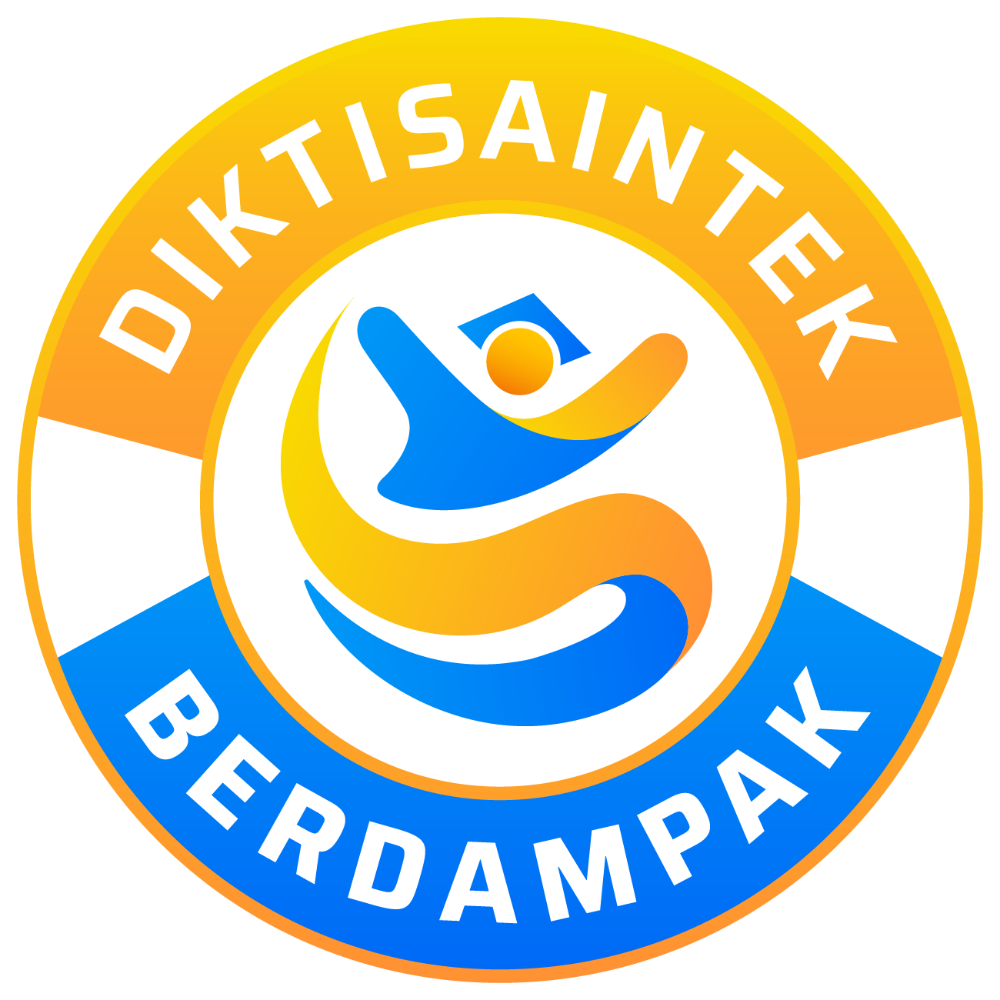
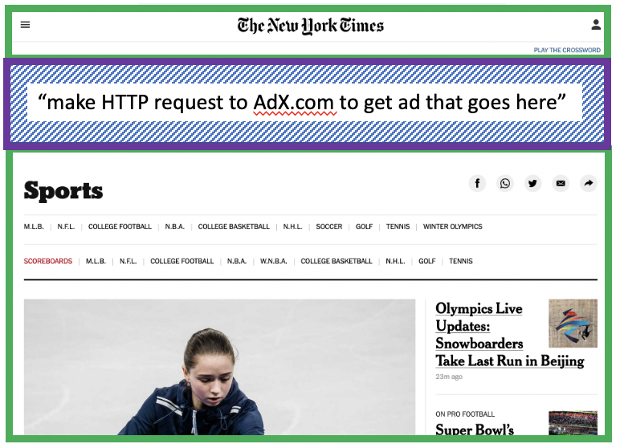
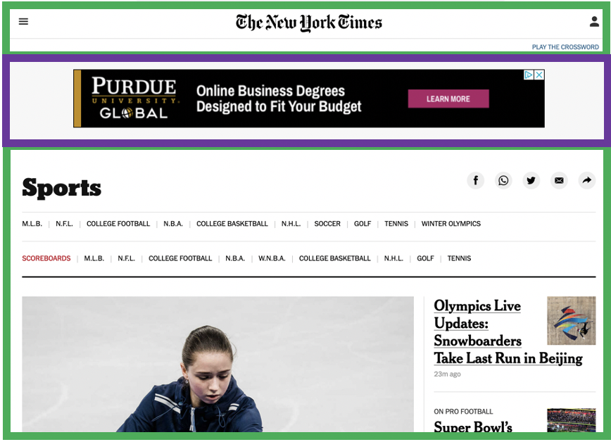
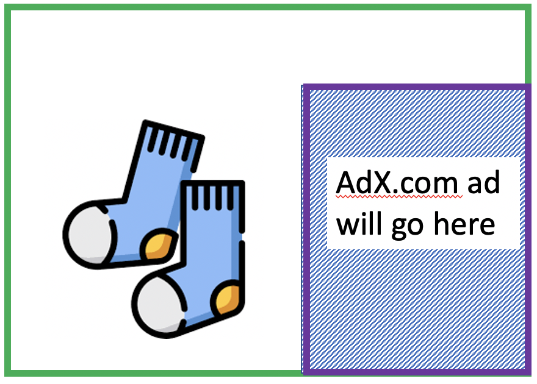
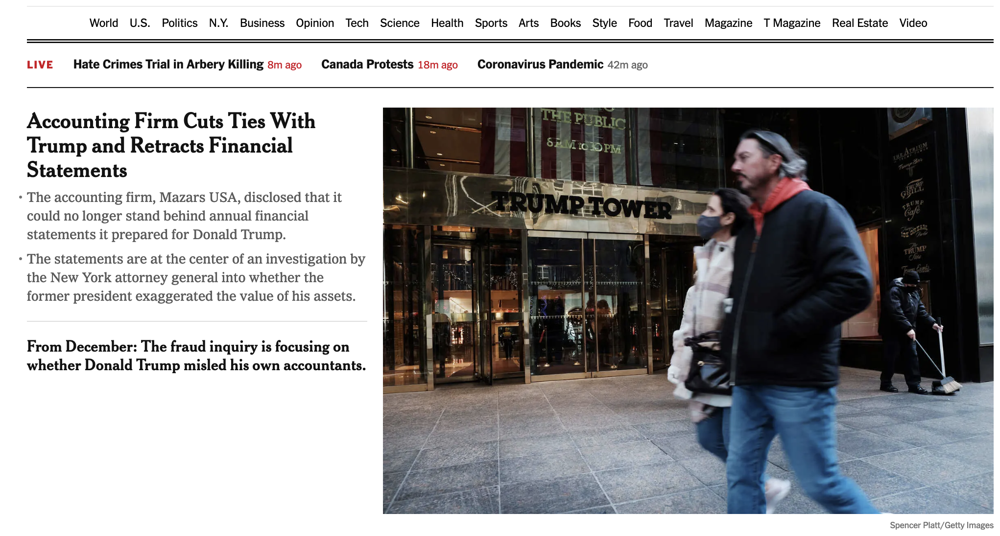
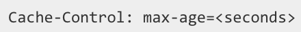
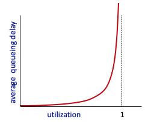
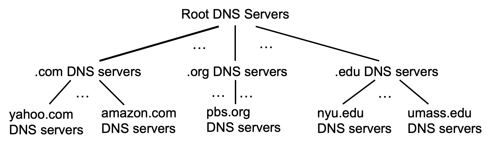

Application Layer
Pertemuan 12
Pendalaman Ekstensif: Web & HTTP, E-mail (SMTP/IMAP), dan DNS
Referensi: Bahan Ajar Week12.pptx & RPS Jaringan Komputer
Dosen Pengampu:
Goals & Overview
Sasaran Pembelajaran Pertemuan 12:
- Memahami aspek konseptual dan implementasi dari protokol-protokol di Application Layer.
- Memahami model transport-layer service.
- Membedah paradigma Client-Server vs Peer-to-Peer.
- Mempelajari secara mendalam protokol-protokol populer: HTTP, SMTP, IMAP, dan DNS.

Network Apps Populer
Aplikasi jaringan adalah penggerak utama Internet modern. Beberapa contoh terpopuler:
- Web Browsing & E-mail
- Social Networking (Meta, X, TikTok)
- Multi-user Network Games
- Streaming Video Berbayar (YouTube, Netflix)
- P2P File Sharing (BitTorrent)
- Voice over IP & Video Conferencing (Skype, Zoom)
Creating a Network App
Sebagai pengembang, tugas kita adalah menulis program yang berjalan pada end systems (host) berbeda dan saling berkomunikasi melalui jaringan.
- Kita tidak perlu memprogram perangkat network-core seperti Router atau Switch layer 2.
- Aplikasi di-deploy secara ekstrem di *edge* jaringan (ujung), memungkinkan proses inovasi aplikasi berjalan sangat cepat tanpa mengubah infrastruktur fisik internet.

Paradigma Aplikasi: Client-Server
- Server: Merupakan host yang selalu menyala (always-on). Umumnya memiliki IP Address statis permanen, dan diletakkan di dalam Data Center raksasa demi kemudahan skalabilitas.
- Client: Memulai kontak ke server. Kadang tidak selalu menyala, dan IP Address-nya dapat berubah (Dynamic IP).
- Batasan: Client TIDAK BISA berkomunikasi secara langsung dengan client lainnya tanpa perantara server.
Paradigma Aplikasi: Peer-to-Peer (P2P)
- Tidak ada server permanen utama: End system berkomunikasi langsung secara mandiri.
- Self-scalability: Setiap kali *peer* baru bergabung, ia tak hanya menambah beban (demand), tetapi otomatis menambah *service capacity* bagi jaringan (membantu mengirim file ke peer lain).
- Kendala: IP yang dinamis dan terhubung putus-nyambung membuat sistem P2P sulit untuk dikelola secara terpusat.

Proses yang Berkomunikasi (Sockets)
Sebuah Proses adalah program yang sedang berjalan di dalam host.
Agar dua proses pada host yang berbeda dapat bertukar pesan, mereka memanfaatkan Socket.
- Socket dapat dianalogikan sebagai sebuah Pintu.
- Proses pengirim mendorong pesannya melewati pintu. Begitu pesan keluar dari pintu, proses pengirim percaya 100% pada infrastruktur di balik pintu (Internet/OS) untuk mengirimkannya ke pintu penerima.

Kebutuhan Transport Service Aplikasi
Aplikasi yang berbeda memiliki kebutuhan kualitas yang berbeda (QoS):
- Data Integrity: File transfer dan e-mail butuh jaminan data 100% utuh tanpa kerugian satu bit pun (Reliable). Aplikasi audio kadang menoleransi kehilangan sebagian paket (Loss-tolerant).
- Timing: Telepon Internet (VoIP) dan game kompetitif butuh penundaan (delay) yang sangat rendah untuk terasa *real-time*.
- Throughput: Video streaming butuh bandwidth *minimum* tertentu untuk berjalan mulus.
- Security: Kebutuhan enkripsi dari ujung ke ujung.
Internet Transport Protocols: TCP vs UDP
| TCP Service | UDP Service |
|---|---|
| Connection-oriented (Setup required) | Connectionless (Tidak ada handshaking) |
| Reliable Transport | Unreliable data transfer (Best effort) |
| Flow & Congestion Control | Tidak peduli seberapa macet jaringan |
| Cocok: E-mail (SMTP), Web (HTTP), File (FTP) | Cocok: Telephony (SIP), Game, Streaming Real-time |
Web dan HTTP: Tinjauan Ulang
Sebuah halaman web biasanya terdiri dari satu Base HTML File dan beberapa Referenced Objects (gambar JPEG, video, CSS).
- Setiap objek dialamatkan oleh sebuah URL (Uniform Resource Locator).
- Contoh:
www.someschool.edu/someDept/pic.gif - HTTP (Hypertext Transfer Protocol) adalah protokol aplikasi utama web. Menerapkan model arsitektur Client (Browser) dan Server (Apache/Nginx).
HTTP Overview (Stateless)
HTTP berjalan di atas TCP (Port 80/443). Urutannya:
- Client (Browser) membangun koneksi TCP ke Server.
- Server menerima (Accept).
- Client dan Server saling bertukar HTTP message.
- Koneksi TCP ditutup.
Sifat Krusial HTTP adalah STATELESS!
Server tidak menyimpan memori apa pun terkait interaksi client sebelumnya. Setiap request dianggap dari orang baru.

HTTP Connections: 2 Tipe Historis
1. Non-persistent HTTP:
- Hanya MAKSIMAL SATU objek yang boleh dikirim di atas satu koneksi TCP terbuka.
- Setelah 1 file JPEG terkirim, koneksi TCP ditutup. Jika butuh 10 JPEG, browser harus mengulang proses TCP 3-way handshake sebanyak 10 kali! Sangat tidak efisien (2 RTT per objek).
2. Persistent HTTP (HTTP 1.1):
- Satu buah TCP koneksi dibuka.
- Berbagai macam objek (HTML, CSS, 10 JPEG) dikirimkan secara paralel/beruntun tanpa perlu memutus koneksi di tengah jalan (pipeline). Menghemat banyak waktu!
Ilustrasi Waktu Non-Persistent (RTT)
RTT (Round Trip Time): Waktu bagi sebuah paket kecil untuk melakukan perjalanan pulang-pergi dari client ke server.
- 1st RTT: Membuka TCP.
- 2nd RTT: Mengirim HTTP Request, dan menunggu bait pertama dari HTTP Response.
- File Transmission Time: Waktu mentransfer sisa data file dari server.
Total = 2 RTT + File Transmission Time. (Diulang-ulang untuk setiap objek!).

Anatomi Pesan HTTP Request
Pesan HTTP berbasis ASCII (bisa dibaca manusia). Strukturnya terdiri dari:
- Request Line: Mengandung
Method(GET/POST),URL, danVersion. - Header Lines: Mengandung Metadata seperti
Host,User-Agent(jenis browser), danAccept-Language. Diakhiri oleh spasi baris kosong ganda ( - Entity Body: Payload khusus untuk operasi
POSTatauPUT.

Anatomi Pesan HTTP Response
Sama seperti request, namun memiliki Status Line:
- Contoh Status:
HTTP/1.1 200 OK. - 200 OK: Sukses, file ditemukan.
- 301 Moved Permanently: Halaman sudah ganti alamat (Redirection).
- 400 Bad Request: Sintaks klien ngawur.
- 404 Not Found: Data/halaman tidak ada di server.
- 505 Version Not Supported: Versi HTTP kadaluarsa/tak cocok.
Cookies: Membawa "State" pada Protokol Stateless
Karena HTTP itu "pelupa" (Stateless), bagaimana cara Tokopedia mengingat keranjang belanja kita walau kita pindah halaman?
Cookies adalah id unik yang disimpan di browser kita.
- Saat pertama kali berkunjung, Server membalas dengan Header:
Set-cookie: 1634 - Browser menyimpan "1634" tersebut.
- Pada request berikutnya, Browser otomatis melampirkan Header:
Cookie: 1634 - Server membaca nomor tersebut, lalu mencari di database-nya untuk memulihkan sesi profil kita.
Bahaya Cookies & Privasi Tracking
- First-party cookie: Cookie dari website asli yang ingin kita kunjungi (contoh: NY Times).
- Third-party cookie (Tracking cookies): Cookie dari pihak ketiga penyedia iklan (contoh: AdX) yang diam-diam terselip di website NY Times.
Ketika Anda mengunjungi website "Socks.com" yang juga memakai AdX, AdX akan melihat nomor cookie yang sama dan menyadari, "Ah, orang yang kemarin baca berita sport di NY Times sekarang mencari kaus kaki!". Hal ini mengganggu privasi. (Mulai diblokir oleh Safari/Firefox modern).

Web Caches (Proxy Server)
Di lingkungan institusi kampus/perusahaan besar, akan sangat boros jika ribuan mahasiswa mem-fetch file gambar yang persis sama ke Server di Amerika.
Solusi: Local Web Cache.
- Semua browser mahasiswa diarahkan request-nya ke server Proxy (Cache) di dalam kampus.
- Jika file ada di Cache kampus, langsung dikirim ke mahasiswa dengan delay milidetik (Local LAN).
- Jika belum ada, Proxy akan mengunduh dulu dari Server Amerika, menyimpannya di harddisk kampus, baru memberikannya ke mahasiswa.
Analisis Performa Web Cache
Hitungan matematis menunjukkan Caching JAUH lebih murah daripada harus menyewa ISP dengan bandwidth yang lebih tinggi (upgrade Access Link).
Bagaimana agar data Cache tidak kadaluarsa (basi)?
- Conditional GET: Proxy akan bertanya ke server Amerika, "Kirimkan update terbaru, JIKA DAN HANYA JIKA file ini sudah dimodifikasi sejak
<date>." (Menggunakan headerIf-modified-since). - Jika tidak ada modifikasi, server Amerika hanya membalas pesan kosong
304 Not Modifiedyang menghemat bandwidth besar-besaran.
Evolusi HTTP: HTTP/2 & HTTP/3
Meskipun HTTP 1.1 Persistent sudah baik, ia memiliki masalah Head-of-Line (HOL) Blocking.
- Jika antrean request pertama (misal Video 100MB) memakan waktu lama/hilang di jalan, maka antrean request objek kecil di belakangnya (CSS 10KB) ikut MACET.
- HTTP/2: Memungkinkan pipelining pararel sejati, memecah file jadi frame kecil yang menyalip satu sama lain.
- HTTP/3: Mengganti pondasi secara ekstrim! Tidak lagi menggunakan TCP, melainkan berjalan di atas UDP (dengan protokol baru bernama QUIC). Lebih bebas hambat tanpa harus menunggu re-transmisi paket error!
E-mail: Struktur Fundamental
Sistem Surat Elektronik (E-mail) memiliki 3 pilar penyangga:
- User Agent: Aplikasi *Mail reader* di HP/Laptop kita (Contoh: Outlook, Apple Mail). Digunakan untuk membaca dan merangkai email.
- Mail Servers: Infrastruktur 24-jam penyedia layanan (Contoh: Server Gmail, Server Yahoo). Di sinilah tempat Kotak Surat (Mailbox) kita berlabuh.
- SMTP (Simple Mail Transfer Protocol): Bahasa utama yang digunakan oleh Mail Server pengirim untuk berbicara dengan Mail Server penerima.

Mail Servers & Message Queue
Di dalam sebuah Mail Server, terdapat dua struktur ruang penyimpanan:
- Mailbox: Gudang untuk menyimpan pesan-pesan yang DITERIMA / MASUK ke akun user.
- Message Queue (Antrean Pesan): Ruang tunggu bagi pesan-pesan yang *hendak dikirim keluar* oleh SMTP. Jika server tujuan (misal Yahoo) sedang down, pesan akan mengantre dan dicoba dikirim terus-menerus selama beberapa hari sebelum dinyatakan "Mail Delivery Failure".
Skenario Pengiriman E-mail Penuh
Bagaimana nasib sebuah email dari diketik hingga dibaca?
- Alice mengetik email untuk Bob, menekan Send di Outlook (User Agent).
- Outlook mendorong email tersebut ke Server Mail milik institusi Alice.
- Server Mail Alice mendeteksi
@bob.edu, kemudian SMTP Client milik institusi Alice membuka koneksi TCP Port 25 ke Server Mail milik institusi Bob. - Mail Server Alice mendorong email ke Mail Server Bob secara langsung via SMTP (Push).
- Mail Server Bob meletakkan email ke dalam Mailbox khusus akun Bob.
- Besoknya, Bob membuka Outlook-nya. Outlook menarik (Pull) data dari Mail Server Bob menggunakan protokol **IMAP/POP3**.
DNS (Domain Name System)
Mengapa kita butuh DNS?
- Manusia lebih mudah mengingat nama/alias (misal:
www.google.com). - Router internet mutlak HANYA bisa mengirim data menggunakan angka IP Address 32-bit (misal:
142.250.191.132).
DNS adalah buku telepon raksasa terdistribusi yang bertugas menerjemahkan (mapping) *Hostname* bahasa manusia menjadi *IP Address* bahasa router.
Mengapa DNS Tidak Disentralisasi?
Mengapa tidak membuat SATU SAJA server super besar berisikan seluruh tabel nama internet di dunia?
- Single point of failure: Jika satu server itu meledak, seluruh internet dunia akan mati total tak bisa diakses.
- Volume Trafik: Triliunan *query* pencarian datang per detik, mustahil diproses satu entitas.
- Skalabilitas & Delay Jarak: Orang di Antartika akan sangat lambat mengakses server tunggal di benua Amerika.
Karenanya DNS dibangun dengan arsitektur Desentralisasi & Hirarkis (Database Terdistribusi).
Hirarki Server DNS
Mekanisme pencarian bersifat berjenjang dari atas ke bawah:
- Root DNS Servers: Puncak hirarki di seluruh dunia (Terdapat 13 gugus server besar). Bertugas mengarahkan ke TLD.
- TLD (Top-Level Domain) Servers: Mengelola domain tingkat tinggi seperti
.com,.net,.org,.edu, atau negara (.id,.jp). Server TLD tau siapa pengelola sub-domain. - Authoritative Servers: Server milik organisasi yang BENAR-BENAR menyimpan tabel asli IP address dari
google.comatauyahoo.com.
Metode Resolusi 1: Iterated Query
"Saya tidak tahu alamat pastinya, tapi silakan tanya orang ini."
- Client bertanya ke Local DNS Server.
- Local bertanya ke Root. Root mengembalikan IP dari TLD
.edu. - Local bertanya langsung ke TLD
.edu. TLD mengembalikan IP dari Authoritativeumass.edu. - Local bertanya ke Authoritative. Barulah IP sebenarnya didapat.
Pada model Iterated, beban berpindah-pindah, tapi kendali pencarian tetap berada di titik Local DNS Server.
Metode Resolusi 2: Recursive Query
"Tolong carikan sampai dapat, saya terima beres saja."
- Beban pencarian dilimpahkan ke bahu server di tingkatan atasnya.
- Local DNS melempar query ke Root. Root repot mencarikan ke TLD. TLD repot mencari ke Authoritative. Laporan IP Address diserahkan balik secara estafet.
- Kelemahan: Root Server akan kelebihan beban luar biasa berat! Sangat jarang dipraktikkan dalam dunia nyata berskala tinggi.
Caching DNS dan Skema TTL
Pencarian panjang berjenjang tersebut sangat memakan waktu. Maka dari itu diterapkanlah Caching.
- Begitu Local DNS Server menemukan IP
www.google.com, ia akan menyimpannya (Cache) di memori RAM sementaranya. - Permintaan kedua dari mahasiswa lain akan DILAYANI SECARA INSTAN TANPA HARUS NAIK KE ROOT SERVER LAGI.
- TTL (Time to Live): Umur maksimal ingatan tersebut. Setelah misal 24 jam, cache dihapus untuk mencegah risiko IP server yang mungkin saja telah diganti oleh pemiliknya (Out-of-date).

Format Resource Record (RR) DNS
Bentuk data murni dari database DNS adalah tuple 4 nilai: (Name, Value, Type, TTL).
- Type = A: Translasi murni Hostname ke IP Address (IPv4). Contoh:
(foo.com, 1.2.3.4, A). - Type = NS: Translasi Domain untuk mencari siapa Authoritative Server-nya. Contoh:
(foo.com, dns1.foo.com, NS). - Type = CNAME: Nama Samaran (Alias) yang menunjuk ke nama asli. (Misal
www.ibm.commenunjuk ke *canonical name*server2-backup.ibm.com). - Type = MX: Khusus menunjuk alamat IP dari Mail Server SMTP (pengelolaan email institusi).
Keamanan & Serangan DNS
Karena perannya krusial, DNS sering menjadi target serangan:
- DDoS Attacks: Menembakkan trafik sampah ke Root Server hingga *down*. (Sering gagal berkat Caching lokal yang berlapis-lapis).
- Spoofing / DNS Cache Poisoning: Hacker mencegat *query* dan memberikan IP bohongan (Misal, Anda berniat ke m-banking BCA, tapi DNS memberikan IP palsu dari website BCA tipuan si Hacker untuk mencuri PIN Anda).
Solusi modern: DNSSEC, memberikan tanda tangan digital otentikasi bahwa pesan DNS belum dimanipulasi.

Galeri Ilustrasi Tambahan (1)
Galeri Ilustrasi Tambahan (2)

Galeri Ilustrasi Tambahan (3)

Galeri Ilustrasi Tambahan (4)

Galeri Ilustrasi Tambahan (5)

Galeri Ilustrasi Tambahan (6)
Galeri Ilustrasi Tambahan (7)

Galeri Ilustrasi Tambahan (8)
Galeri Ilustrasi Tambahan (9)

Galeri Ilustrasi Tambahan (10)
Galeri Ilustrasi Tambahan (11)
Galeri Ilustrasi Tambahan (12)

Galeri Ilustrasi Tambahan (13)

Galeri Ilustrasi Tambahan (14)
Galeri Ilustrasi Tambahan (15)
